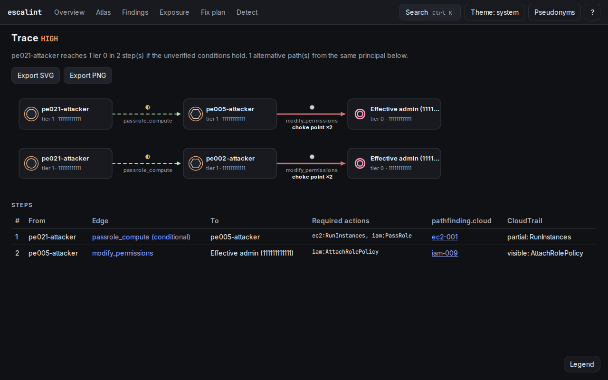
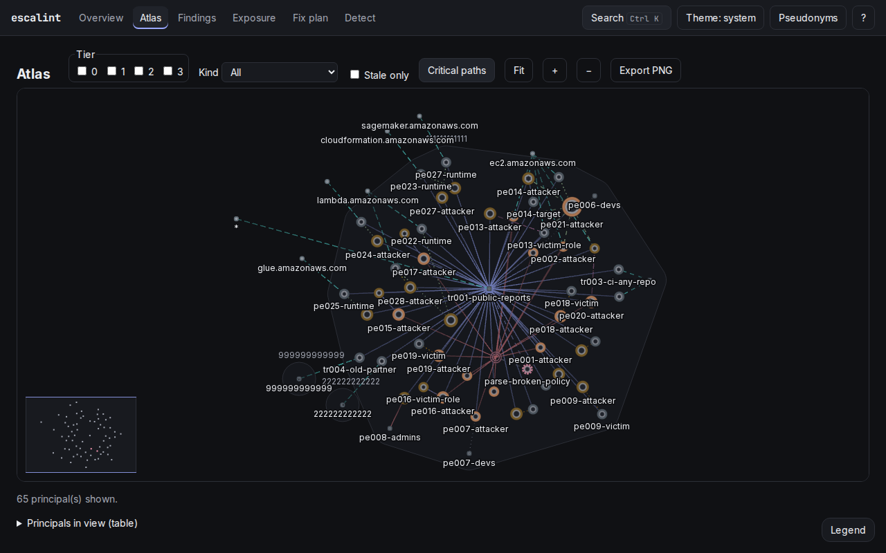

Um principal IAM raramente tem AdministratorAccess direto. O que ele costuma ter é
iam:PassRole com lambda:CreateFunction, ou iam:CreatePolicyVersion numa política
anexada a ele mesmo, ou permissão para assumir uma role cuja trust policy ele consegue reescrever. Lida
sozinha, nenhuma dessas políticas parece perigosa. O problema aparece quando se juntam permissões de
principais e contas diferentes.
Escrevi o escalint, uma ferramenta open source em Go,
para encontrar essas combinações. Ele lê um snapshot do IAM de uma ou mais contas AWS, avalia as políticas
como a AWS avalia, monta um grafo de quem pode agir como quem e desenha todos os caminhos que terminam em
administrador, com a explicação de cada passo e o menor conjunto de mudanças que encontra para cortar esses
caminhos.
Há uma demo ao vivo com dados sintéticos, que roda
inteira no navegador.
As ferramentas que existem
Para atacar
Quem ataca AWS tem ferramentas modernas e mantidas. O Pacu,
da Rhino Security Labs, é um framework de exploração com módulos que enumeram permissões e executam a
escalada. O CloudFox, da Bishop Fox, mapeia a
superfície de ataque de uma conta a partir de credenciais comprometidas. O
Stratus Red Team, da Datadog, emula técnicas
de ataque em cloud mapeadas ao MITRE ATT&CK. Elas ganham suporte a serviços novos e a técnicas recém
publicadas pouco depois que eles aparecem.
Para defender
Para quem defende e quer saber o acesso efetivo no IAM, as opções são mais fracas:
- O Prowler é o CSPM open source de referência e cobre muita coisa: centenas de checagens de configuração em vários provedores (S3 público, security groups abertos, criptografia, logging). As checagens de escalada olham uma política de cada vez, procurando combinações de ações perigosas, e não respondem a uma pergunta como "este principal, assumindo aquela role, chega a admin em dois passos?".
- O PMapper, da NCC Group, foi o primeiro a tratar IAM como grafo. Está há anos sem atualização relevante, e o catálogo de técnicas e serviços ficou parado.
- O CloudMapper, da Duo Labs, parou em 2022. O Cloudsplaining, da Salesforce, gera bons relatórios de políticas excessivas, mas analisa cada política isoladamente e tem futuro incerto.
Em dezembro de 2025, a Datadog publicou o pathfinding.cloud, um catálogo aberto de caminhos de escalada de privilégio em AWS. No lançamento, 27 dos 65 caminhos documentados (42%) não eram detectados por nenhuma das ferramentas open source avaliadas. Hoje o catálogo tem 92 caminhos. Para vários deles, o atacante tem um framework que executa a técnica, e o defensor não tem nada que a aponte antes.
Por que um grafo
John Lambert, da Microsoft, tem uma frase conhecida: "Defenders think in lists. Attackers think in
graphs. As long as this is true, attackers win." O Active Directory passou por isso. O BloodHound
nasceu como ferramenta ofensiva e acabou adotado por times de defesa, porque um grafo de caminhos de ataque
mostra relações que uma lista de achados esconde.
IAM na AWS tem o mesmo formato. Numa lista aparece "a role X tem iam:PassRole em *", com
severidade média, no meio de outros duzentos itens. No grafo aparece "o usuário de CI pode criar uma
instância EC2 com a role Y, que pode anexar uma política a si mesma e vira admin da conta", com a
sequência inteira e o lugar onde dá para cortá-la.
O grafo também muda a forma de corrigir. Quando dez caminhos passam pela mesma aresta, essa aresta é um
choke point, e removê-la resolve os dez de uma vez. Numa lista, eles aparecem como dez itens sem relação
entre si.

Como funciona
escalint collect (só leitura) ou aws iam get-account-authorization-details
│
parsing estrito do snapshot ─────── dados não confiáveis, limites de tamanho
│
avaliador de políticas IAM ──────── deny explícito, SCP, RCP, boundary,
│ trust policy, cross-account; trace por decisão
▼
grafo "pode agir como" ◄──────────── 39 regras adicionam arestas de escalada
│
┌──────────┬─────────┼──────────┬──────────────┐
▼ ▼ ▼ ▼ ▼
k caminhos tiers blast radius choke points plano de correção
até Tier 0 (guloso)
│
analysis.json ──► texto · JSON · SARIF · DOT · Mermaid · UI web embutida
Avaliação das políticas
O núcleo é um avaliador que segue a lógica documentada da AWS: deny explícito em qualquer política, SCPs e
RCPs por nível de OU, permissions boundaries, políticas de identidade, trust policies e regras
cross-account, incluindo NotAction, NotResource, NotPrincipal e wildcards em ações e
ARNs. Cada Allow vem com um trace que diz qual statement decidiu. Condições que não dá para avaliar
estaticamente (MFA, IP de origem, horário) continuam no grafo: o passo é marcado como conditional e
aparece tracejado.
O grafo e as regras
Os nós são principais (usuários, roles, grupos), mais um sumidouro por conta, o Tier 0, que representa
admin efetivo. As arestas vêm de 39 regras: 30 caminhos de escalada (EL-PE), 6 erros de trust
(EL-TR, por exemplo OIDC do GitHub Actions sem condição em sub) e 3 diagnósticos de entrada
(EL-PARSE). Toda regra cita a documentação da AWS, o ID no pathfinding.cloud e as técnicas do MITRE
ATT&CK correspondentes. A versão atual cobre 33 dos 92 caminhos do catálogo.
Análises
Sobre o grafo, o escalint calcula os k menores caminhos de cada principal até o Tier 0, os tiers de
privilégio, o raio de impacto (blast radius), ciclos de assume-role, choke points e um plano de
correção guloso, isto é, uma sequência ordenada de mudanças que remove todos os caminhos. Para cada passo,
ele também diz quais eventos o CloudTrail registraria, ou se o passo é um ponto cego.
A interface
A UI é um app React em TypeScript estrito, com um renderer WebGL próprio, e vem embutida no binário. Ela roda localmente com escalint serve (só em 127.0.0.1, com token de uso único) ou como um único arquivo HTML offline, gerado com escalint report --html. São nove visões:
- Overview: tiers, caminhos críticos, pontos cegos do CloudTrail e o que corrigir primeiro.
- Atlas: todos os principais da conta (ou da organização), agrupados por conta, com zoom semântico. Shift+clique em dois nós mostra o menor caminho entre eles.
- Trace: um caminho passo a passo, com alternativas e choke points. Clicar numa aresta abre o explicador de política, com o statement exato que permitiu aquele passo.
- Reach: o que um principal alcança e quem o alcança, em anéis por número de saltos.
- Exposure, Findings, Fix plan, Detect e Diff: matriz principal × serviço, tabela filtrável, plano de correção com prévia ao vivo dos caminhos que restam, eventos do CloudTrail por passo e o que mudou entre dois snapshots.

Todo grafo tem uma tabela equivalente, a navegação funciona pelo teclado e as paletas são seguras para daltônicos. O snapshot vem de uma conta que pode ter nomes e políticas hostis, então a UI usa CSP estrita e nunca usa innerHTML. Para compartilhar um relatório, --redact troca todos os identificadores por pseudônimos.

Hands-on
Os binários de release (Linux, macOS e Windows, amd64 e arm64) já trazem a UI embutida, são assinados com cosign e têm atestado de proveniência do GitHub. Também há uma imagem distroless:
# escolha a plataforma em https://github.com/brennocm/escalint/releases
curl -sSLO https://github.com/brennocm/escalint/releases/download/v0.1.0/escalint_0.1.0_linux_amd64.tar.gz
gh attestation verify escalint_0.1.0_linux_amd64.tar.gz --repo brennocm/escalint
tar xzf escalint_0.1.0_linux_amd64.tar.gz escalint
docker run --rm -v "$PWD:/work" ghcr.io/brennocm/escalint:v0.1.0 scan /work/snapshot.jsonO uso básico são três comandos. O collect só faz chamadas de leitura (List* e Get*), e o repositório publica a política IAM mínima de que ele precisa:
escalint collect -o snapshot.json # snapshot só leitura com suas credenciais AWS
escalint serve snapshot.json # abre a UI em 127.0.0.1 com token de uso único
escalint scan snapshot.json # achados no terminal; exit 1 se houver high ou criticalSe não tiver credenciais à mão, use as contas de exemplo do repositório. Esta é a saída real (resumida) do scan na conta vulnerável:
escalint scan examples/vulnerable-account/snapshot.json1 account(s), 66 node(s), 114 edge(s), 15 path(s) to Tier 0; 19 critical, 28 high, 57 medium, 2 info
arn:aws:iam::111111111111:role/pe002-attacker (role, tier 1)
path p_a9433adab2c37415 [CRITICAL, allowed, 1 step(s)]
1. arn:aws:iam::111111111111:role/pe002-attacker --[modify_permissions EL-PE-002]--> effective admin (111111111111)
CRITICAL EL-PE-002 Put an inline policy on its own role
arn:aws:iam::111111111111:role/pe002-attacker can act as effective admin of account 111111111111 using iam:PutRolePolicy
policy: inline:arn:aws:iam::111111111111:role/pe002-attacker/p statement #0 (snapshot line 766)
ATT&CK: T1098.003 Account Manipulation: Additional Cloud Roles
fix: Remove iam:PutRolePolicy from the role's policies, or scope its Resource to roles other than itself
and add a permissions boundary that denies it.
arn:aws:iam::111111111111:role/tr002-ci-deploy (role, tier 3)
CRITICAL EL-TR-002 GitHub Actions OIDC trust without a sub condition
any GitHub Actions workflow, in any repository, can assume arn:aws:iam::111111111111:role/tr002-ci-deploy:
the trust has no condition on token.actions.githubusercontent.com:sub
policy: trust:arn:aws:iam::111111111111:role/tr002-ci-deploy statement #0 (snapshot line 1170)
ATT&CK: T1199 Trusted Relationship; T1078.004 Valid Accounts: Cloud AccountsCada achado aponta a política e a linha do snapshot que o causou, as técnicas ATT&CK e uma correção concreta. Os códigos de saída permitem usar o escalint para barrar um pipeline: 0 sem achados acima de --fail-on (padrão high), 1 com achados e 2 para erro de uso.
Em CI
O uso que mais me interessa é impedir que um caminho novo apareça sem ninguém perceber. O
escalint diff compara dois snapshots e só falha com arestas, caminhos e achados adicionados. O
repositório traz uma GitHub Action para um job diário: ela coleta com uma role só leitura via OIDC, compara
com o snapshot do dia anterior e envia o resultado em SARIF para o GitHub Code Scanning:
escalint diff baseline.json snapshot.json --fail-on high
escalint scan snapshot.json --format sarif --output escalint.sarifOnde o escalint se encaixa
Para a postura geral da conta, o Prowler continua sendo a ferramenta certa; o escalint não olha bucket
público nem security group aberto. Para exploração e validação ofensiva, use o Pacu e o CloudFox; o
escalint não assume roles, não cria credenciais e não altera nada na conta.
O escalint ocupa o lugar do PMapper: análise defensiva e estática do acesso efetivo em IAM, com a
explicação de cada passo. Em relação a ele, acrescenta SCPs e RCPs, um catálogo atual mapeado ao
pathfinding.cloud, saída para CI e uma interface gráfica. A ideia de um grafo self-hosted, em que nenhum
dado sai da conta, veio do aws-iam-graph, de
marcelogsantos; o escalint foi escrito do zero.
Limitações
A v1 não modela session policies e session tags, políticas baseadas em recurso além da trust policy
(bucket policies do S3, key policies do KMS, Lambda, Secrets Manager), usuários root nem atribuições do
IAM Identity Center. Condições de requisição não são conhecidas estaticamente, então os passos afetados
ficam como conditional. A cobertura é de 33 dos 92 caminhos do pathfinding.cloud; a maioria dos que
faltam passa uma role para outro serviço de computação e segue o mesmo molde das regras existentes. O
inventário de recursos é regional, o plano de correção é guloso (pequeno, mas sem garantia de ser mínimo)
e um snapshot vale para o momento da coleta: depois de mudanças, é preciso coletar de novo.
O snapshot e os relatórios mostram quem consegue virar administrador na conta. Trate-os como dado sensível
e só compartilhe com --redact.
Considerações finais
Escalada de privilégio em IAM costuma vir de várias permissões razoáveis, espalhadas por principais e
contas diferentes, que ninguém revisou juntas. Quem ataca tem ferramentas que encontram e percorrem essas
combinações; quem defende, na maioria das vezes, tem uma lista de achados.
O escalint avalia as políticas como a AWS avalia, desenha o grafo, explica cada aresta com o statement que a
permite e sugere onde cortar. Isso não garante que uma conta esteja segura, mas coloca na mão de quem
defende o mesmo grafo que um atacante montaria.